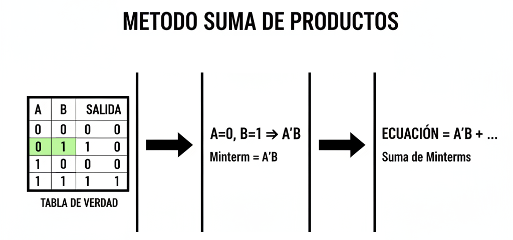

Unidad 2: Lógica Digital - Lección 15
En la lección pasada aprendimos a simplificar ecuaciones existentes. Pero en el mundo real, tu jefe no te da una ecuación; te da una lista de requisitos ("Quiero que la máquina haga esto si pasa aquello"). ¿Cómo conviertes una lista de deseos (Tabla de Verdad) en una fórmula matemática? Hoy aprenderemos a hacer ingeniería inversa usando el método de los Minterms.
Es una receta infalible para diseñar cualquier cosa. La regla es: "Solo nos importan los UNOS".

Fig 1. La receta para crear ecuaciones: Identifica, Traduce y Suma.
Quizás te preguntes por qué la receta te obliga a negar los ceros (\(\bar{A}\)) y a multiplicarlo todo (AND). No es un capricho matemático; es física de semiconductores.
Recuerda la Lección 13: La compuerta AND es el "portero estricto". Solo da 1 (salida activa) cuando TODAS sus entradas son 1.
Supongamos que quieres que una alarma suene únicamente cuando la combinación sea A=0, B=1, C=1.
0, 1, 1. El cero arruinará la multiplicación y la alarma no sonará.1, 1, 1. ¡La alarma suena!Ecuación física: \(\bar{A} \cdot B \cdot C\)
Conclusión: Un Minterm es simplemente una compuerta AND "disfrazada" de cerradura. Las barras de negación son los "dientes de la llave" que engañan a la compuerta para que se active solo con la combinación que tú deseas.
Lo que estás haciendo ahora no es solo copiar filas; estás realizando una síntesis lógica: convertir una especificación funcional (la tabla de verdad) en una implementación concreta (la ecuación lógica).
Es el mismo proceso que usa un ingeniero al diseñar un chip: primero define qué debe hacer (por ejemplo, "encenderse si hay mayoría"), luego decide cómo construirlo (con compuertas AND, OR, NOT). ¡Estás pensando como un diseñador de sistemas digitales!
Vamos a diseñar un circuito para un jurado de 3 jueces (A, B, C). La propuesta se aprueba (\(P=1\)) si hay mayoría simple (2 o 3 votos a favor).
| C | B | A | Salida (P) | Minterm (Traducción) |
|---|---|---|---|---|
| 0 | 0 | 0 | 0 | - |
| 0 | 0 | 1 | 0 | - |
| 0 | 1 | 0 | 0 | - |
| 0 | 1 | 1 | 1 | \(A \cdot B \cdot \bar{C}\) |
| 1 | 0 | 0 | 0 | - |
| 1 | 0 | 1 | 1 | \(A \cdot \bar{B} \cdot C\) |
| 1 | 1 | 0 | 1 | \(\bar{A} \cdot B \cdot C\) |
| 1 | 1 | 1 | 1 | \(A \cdot B \cdot C\) |
Observa que hemos resaltado en verde las filas donde la salida es 1. Para obtener la ecuación final, simplemente sumamos estos cuatro términos:
¡Listo! Esta ecuación describe perfectamente la "Mayoría". Si la construyes, funcionará.
Cuando tus estudiantes vean la ecuación final del Jurado (\(P = \bar{A}BC + A\bar{B}C + AB\bar{C} + ABC\)), entenderán de dónde salió cada bloque (los minterms). Pero se preguntarán: "¿Por qué los unimos con signos de suma (+)?".
Si no les explicas esto, pensarán que es una regla matemática arbitraria. ¡Usa la Analogía del Club VIP!
Diles a tus alumnos: "Imagina que el circuito final (la salida \(P\)) es la entrada a un Club VIP muy exclusivo. Para entrar, debes pasar por los guardias de seguridad."
El Cierre Pedagógico: "Por eso unimos los guardias (Minterms) con sumas (+). En lógica, la suma es una compuerta OR, que significa 'o entras por aquí, O entras por allá'. Si los uniéramos con multiplicaciones (AND), tendrías que pasar las 4 puertas al mismo tiempo, ¡y eso es físicamente imposible porque cada puerta pide ropa diferente!"
Escribir letras es tedioso. Los ingenieros preferimos usar los números de fila.
Si conviertes el código binario de las entradas a decimal, sabes qué número de fila es:
Entonces, en lugar de la ecuación larga, $P = AB\bar{C} + A\bar{B}C + \bar{A}BC + ABC$, escribimos esto:
Traducción Precisa: "La salida se enciende (1) cuando el valor binario de las entradas es 3, 5, 6 o 7".
(Ejemplo: Si entran 1-0-1, eso es un 5 en binario. Como el 5 está en la lista \(\Sigma\), la salida será 1).
Mira la ecuación: \( P = \bar{A}BC + A\bar{B}C + AB\bar{C} + ABC \). Es gigante. Necesitarías muchos chips y cables para armarla. ¿No habrá una forma de decir lo mismo con menos palabras?
No necesitas memorizar ni hacer cálculos a mano. Puedes usar una IA generativa para:
Recuerda: La IA es tu asistente, no tu reemplazo. Anota en tu cuaderno tanto su respuesta como tu reflexión crítica sobre ella.
Existe una forma dual llamada Producto de Sumas (POS), donde se usan maxterms (sumas donde la salida es 0). No la usaremos ahora, pero en la Lección 18 verás cómo las compuertas NOR y NAND se relacionan naturalmente con esta forma. Por ahora, dominemos la SOP, que es la más intuitiva para empezar.
Esta notación Σ es útil para escribir la función, pero la ecuación subyacente \(P = \bar{A}BC + A\bar{B}C + AB\bar{C} + ABC\) aún es compleja. En la Lección 14 aprendiste las Leyes de De Morgan; en la siguiente (Lección 16), verás cómo aplicarlas —junto con los Mapas de Karnaugh— para reducirla a una forma mucho más simple, como \(P = AB + AC + BC\). ¡No te detengas en la SOP, sigue hacia la simplificación!
Imagina que estás preparando una clase para estudiantes de grado 10° que ya conocen tablas de verdad y operaciones lógicas básicas (AND, OR, NOT).
Anota tu estrategia en tu cuaderno. Recuerda: no se trata de enseñar la fórmula, sino de guiar el descubrimiento.
Imagina que estás preparando una clase para estudiantes de grado 10° que ya conocen tablas de verdad y operaciones lógicas básicas (AND, OR, NOT).
Escribe tu estrategia en tu cuaderno. Recuerda: no se trata de enseñar la fórmula, sino de guiar el descubrimiento. ¡Tú eres el facilitador, no el transmisor!
Dos docentes analizan el proceso de síntesis lógica: cómo convertir una tabla de verdad en una ecuación usando minterms y la forma SOP. Comparten estrategias para enseñar este concepto a estudiantes de grado 10°, cómo introducir la notación sigma de forma clara y reflexionan sobre la importancia de que los futuros docentes comprendan que esta ecuación es solo un paso intermedio, que debe simplificarse para obtener un diseño eficiente.
Responde estas preguntas para asegurarte de que dominas los conceptos técnicos y estás listo para enseñarlos en tu futura aula:
Explicación técnica: Un minterm es una expresión lógica que representa exactamente una combinación única de entradas que produce una salida de 1. Se construye multiplicando (AND) todas las variables, negando aquellas que son 0 en esa fila. Por ejemplo, si A=0, B=1, C=1, el minterm es \(\bar{A} \cdot B \cdot C\).
Metáfora del "Código de Acceso":
Para tu futura aula: Usa tarjetas con combinaciones binarias (000, 001, etc.) y pide a los estudiantes que "activen" solo la tarjeta que corresponde a una salida 1. Luego, construyan su "código de acceso" (minterm) con bloques de AND y NOT.
Explicación técnica: La SOP es una representación formal y universal que permite: (1) sintetizar circuitos directamente desde una tabla de verdad, (2) simplificar con herramientas algebraicas (De Morgan, Karnaugh), y (3) implementar en hardware (chips, FPGA) sin ambigüedad. Las descripciones verbales son ambiguas y no escalables.
Metáfora del "Lenguaje de Máquina":
Conexión STEAM: Esto muestra por qué la matemática es el lenguaje de la ingeniería: sin ella, no podríamos diseñar sistemas complejos como smartphones o robots.
Explicación técnica: La notación Σm indica una suma de minterms. Los números entre paréntesis (3, 5, 6, 7) son los índices decimales de las filas donde la salida es 1. Para convertirla a SOP, se escribe cada minterm correspondiente:
Σm(3,5,6,7) = \(\bar{A}BC + A\bar{B}C + AB\bar{C} + ABC\)
Metáfora del "Índice de Libro":
Para tu futura aula: Haz una actividad con tarjetas numeradas del 0 al 7. Pide a los estudiantes que identifiquen qué combinaciones binarias corresponden a esos números y construyan los minterms con bloques físicos.
Explicación técnica: Tienes razón: la SOP siempre funciona. Pero es como escribir un programa en ensamblador: correcto, pero ineficiente. Una SOP puede requerir muchos chips (ej: 4 compuertas AND + 1 OR), mientras que una forma simplificada (usando De Morgan y Karnaugh) puede reducirla a 2 compuertas. Menos componentes = menos costo, menos energía, menos fallos.
Metáfora del "Mapa de Carreteras":
Ética Docente: Enseñar solo la SOP sería como enseñar a sumar con lápiz y papel sin mostrar la calculadora. El ingeniero debe saber cuándo usar cada herramienta.
Actividad: "El Juego de los Minterms"
Materiales: Hojas impresas, marcadores, y opcionalmente, bloques de AND/OR/NOT de cartón.
Objetivo pedagógico: Que descubran por sí mismos que cada fila con salida 1 genera un minterm, y que la SOP es su suma. Sin definiciones, solo experimentación y patrones.
Proceso:
Reflexión: ¿Qué pasaría si intentaras describir esta regla solo con palabras? ¿Por qué la ecuación SOP es más precisa para construir el circuito?
Para tu futura aula: Esta es una excelente actividad para grado 10° o 11°. Permite a los estudiantes ser creativos con la regla lógica, y al mismo tiempo, practican el proceso completo de síntesis lógica.
Acabamos de crear una ecuación que funciona, pero es "fuerza bruta". Es cara y difícil de armar. ¿Recuerdas que te prometí trucos de magia? En la siguiente lección, usaremos una herramienta gráfica llamada Mapas de Karnaugh para jugar "Tetris" con esos unos y reducir esa ecuación gigante a algo diminuto y elegante.
Cuando tu celular reconoce tu cara, está buscando un "Minterm Gigante". Tu cara es una combinación única de miles de puntos (entradas). Si la combinación es correcta (1-1-0-1...), la "puerta" del celular se abre. Para la IA, tú eres la única fila de la tabla de verdad que debe dar como resultado 1.
En Inteligencia Artificial, cuando una máquina clasifica algo (ej: Perro, Gato o Ave), usa una técnica llamada One-Hot Encoding. Esto es idéntico a los Minterms: solo una salida se activa a la vez para una entrada específica. Aprender a diseñar Minterms es aprender la lógica básica que permite a un Tesla distinguir entre un peatón y un poste.
🚀 Conexión Futura: Una neurona artificial es como una compuerta AND "flexible". En la Lección 25 veremos que si sumamos suficientes de estas "cerraduras", podemos crear una máquina que aprenda cualquier cosa.